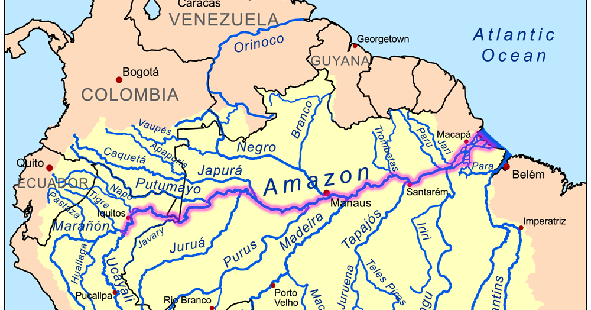
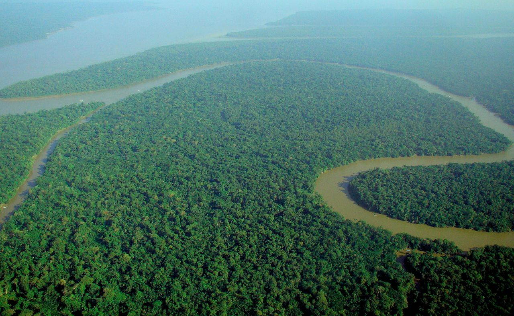
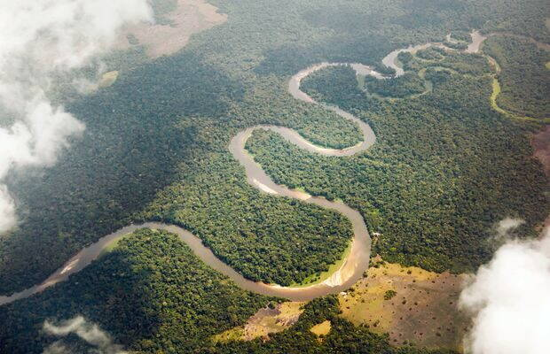

Localizare
Amazon cel mai mare fluviu al Terrei este situat in America de Sud.El străbate continentul dintr-o parte in alta,desfășurându-se de-alungul paralelei de 4 lat. sudică.  În parcursul sau de la Anzii Peruvieni la Oc.Atlantic străbate 5 tări:Columbia,Ecuator,Peru,Bolivia si Brazilia,teritoriu pe care se desfășoara cea mai mare parte a apelor sale.
Bazinul Amazonului este vizibil chiar si din satelit,desfășurându-se in marea sa splendoare ca o frunză a cărei principale nervuri este Amazonul.
Descriere generală
Amazon (Amazonas) a fost inițial numit dupa primul descoperitor - Orellana,indienii îi spuneau Parana-Tinga (Râul Alb) sau Parana-Guazu (Râul Mare).
Exista unele controverse in ceea ce privește originea numelui râului.Unii afirma ca numele “Amazon” provine de la Amazoane,femei razboinice din mitologia greaca,alți afirmă că numele derivă de la cuvantul amerindian amassona care înseamna distrugătorul de bărci.Acest renume este pe bun drept meritat de magnificul fluviu care drenează de două ori mai multe aluviuni de cat insusi Nilul.
In 1500 spaniolul Vicente Yanez Pinzon descoperă gura fluviului ale carui ape transformau porțiunea alăturată Oceanului Atlantic într-o Mar Dolce (Marea Dulce).Având o lungime de 7025 km, magnificul fluviu prin apele sale formeaza un bazin având o suprafață de 7150000 km2 .
 Cursul superior, reprezentat prin Ucayali si Maranon, se înscrie în regiunea muntoasă, andina, cu vai înguste, îndeosebi a Maranonului, care curg paralel cu tărmul Pacificului pe o vale de natură tectonică, cu pante mari, ceea ce conferă râurilor viteze de scurgere mari în comparație cu cele din Câmpia Amazoniei. Câmpia Amazoniei, care are o lungime, de la vest la est, de 4 380 km, o pantă extrem de mică - 0,003 % (la vest 160 m. alt. și la est 0 m), corespunde unei zone de subsidența în care s-a acumulat un volum enorm sedimente (circa 4 000 m grosime).
Râurile afluente, la ieșirea din podișurile vecine, constituite din roci dure, formează numeroase cascade și repezisuri care le conferă un potențial idroenergetic ridicat.
Situat în zona ecuatorială, cu afluenți în ambele emisfere, regimul de scurgere este uniform tot timpul anului. În timpul verii boreale aduc ape bogate râurile de pe partea stânga, iar în vara australă cele de pe dreapta. Totuși, datorită numărului mare de afluenți din emisfera australă, în august - septembrie, când râurile de aici au apă mai puțină, se înregistrează ape scăzute pe Amazon. Sunt și situații, cu totul excepționale, când apele mari din cele două emisfere se suprapun producând inundații catastrofale.
Informațiile provenind din surse autorizate despre cantitatea de apă e care o transporta Amazonul sunt, totuși, destul de diferite. Cu circa 309 ani în urmă, debitul mediu al răului era estimat la 70 000 m3/s: Ulterior, prin efectuarea altor măsurători, cifra s-a ridicat la 120 000 m3/s, iar după calculele Serviciului geological Statelor Unite,această ar ajunge la valoarea colosală de 190 000 m3/s după confluența cu răul Xingu, corespunzând unui debit specific de 30,9 1/s. km2. În lucrarea World water balance and water resources of the Earth, 1978, debitul mediu împreună cu Tocantins este estimat la 220 000 m3/s. Debitul maxim ar fi de aproximativ 300 000 m3/s, iar cel minim de 70 000 - 80 000 m3/s.
Potrivit valorii debitului mediu,Amazonul ar deține 17-19 % din scurgerea medie a râurilor Terrei.Corespunzător acestei cantități de apă este și cea de aluviuni, care apreciază la un miliard de tone pe an. Această cantitate enormă de aluviuni este împrăștiată în Oceanul Atlantic sub formă unui uriaș evantai, în față gurilor Amazonului, până la circa 300 km în larg. În interiorul bazinului sunt afluenți care aduc ape încărcate cu aluviuni galbene, numiți și brancos și râuri cu ape negre drenate din mlaștini numite rios negros.Potențialul hidroenergetic al Amazonului, cu toți afluenții, apreciat 1a 280 mil. KW, este foarte puțîn folosit până în prezent. navigația pe Amazon și afluenții săi însumează circa 50 000 km, pe fluviu această practicandu-se cu vase de tonaj maritim până la Manaus și cu vase mai mici, pe 4200 km, până la cascadă Pongu de Manscriche, situată pe Maranon, la ieșirea acestuia din Anzi.
Un fenomen cu totul deosebit care se produce pe Amazon, numit de localnici pororoca este efectul fluxului marin care pătrunde în sus pe fluvii provocând valuri puternice ce ajung uneori până la Santarem, la 1 000 km în interior. În estuarul larg de peste 200 km și lung de 350 km pororoca are efecte distrugătoare asupra țărmului, ingreuiaza navigația spre ocean și chiar descărcarea apelor. Pororoca, alături de inundații, sunt două fenomene care schimbă continuu configurația malurilor și a tuturor gurilor de vărsare ale afluenților până la Manaus.